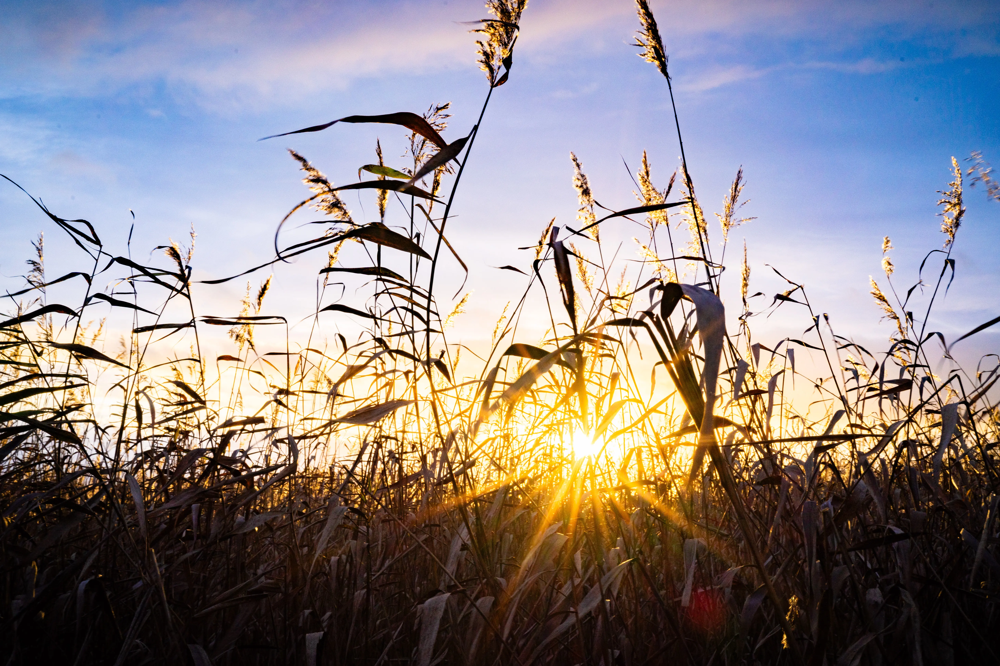

Autumn

credit: Michal Minstr
Which do you choose
The leaf
Or the flower
I'll stay
In the rattle of autumn
And sit Where the wind
rives my hair
In an array of tangled fields
Like waning flakes
Slipping memories
To the earth
-Milene Minssieux
credit: Michal Minstr
Desiccation
All that's left
Is dust
I rub my fingers and crumble
Pieces of me
Are gathered by scavengers
For a fest or a home
Is this what it was like
Before it all started?
There is nothing left to collect
The isolated layers of my feelings
The fluids have dissipated
And my marrow is dry
It's hot outside
The sun shines without shame
I'm waiting for it to rain
So the parts of me that have gone astray
Can find one another
Water, I wait for your spur
To bind sense to matter
-Milene Minssieux
All that's left
Is dust
I rub my fingers and crumble
Pieces of me
Are gathered by scavengers
For a fest or a home
Is this what it was like
Before it all started?
There is nothing left to collect
The isolated layers of my feelings
The fluids have dissipated
And my marrow is dry
It's hot outside
The sun shines without shame
I'm waiting for it to rain
So the parts of me that have gone astray
Can find one another
Water, I wait for your spur
To bind sense to matter
-Milene Minssieux
credit: Michal Minstr
I think
everything i see
each heartbeat
and sound
land on paper
Tremors waver
An autumn wind tilting my pen
In contemplations that rattle
Over this tangled landscape
Snow falls
hushing this mass
Coiling verses
In crisp meadows
The concept
slips
On these emancipated tarps
-Milene Minssieux
everything i see
each heartbeat
and sound
land on paper
Tremors waver
An autumn wind tilting my pen
In contemplations that rattle
Over this tangled landscape
Snow falls
hushing this mass
Coiling verses
In crisp meadows
The concept
slips
On these emancipated tarps
-Milene Minssieux